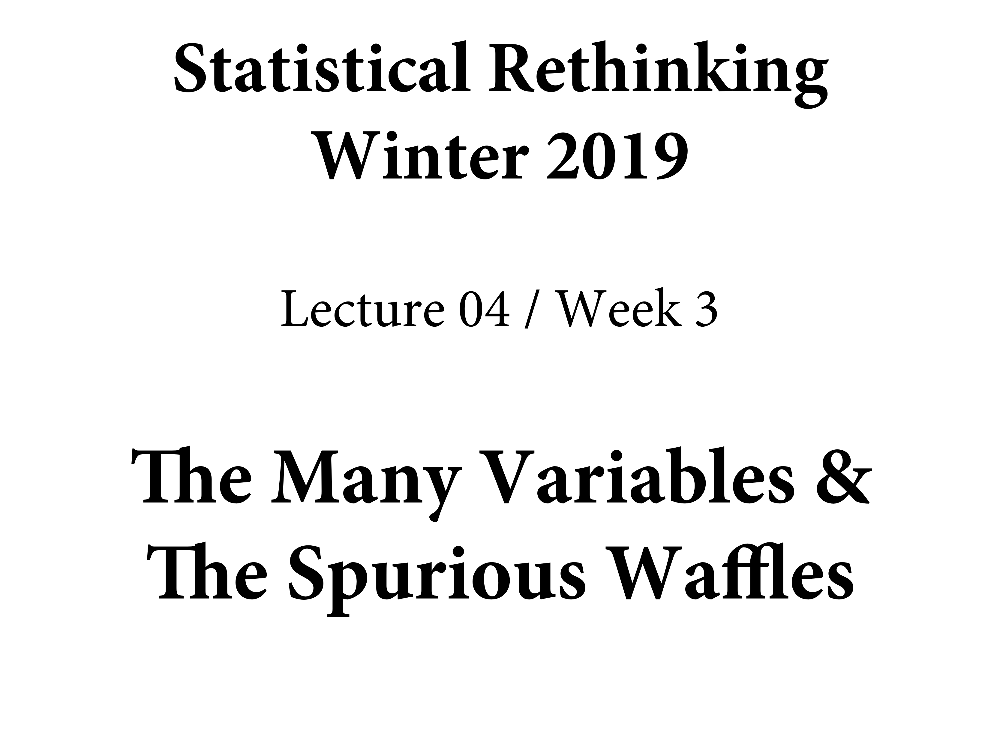

Chapter 5 The Many Variables & The Spurious Waffles
library(here)
source(here::here("code/scripts/source.R"))slides_dir = here::here("docs/slides/L05")
Went to College in Atlanta. Has Waffle Houses. Always open. Sometimes there are two Waffle Houses. Other things in the South include Hurricanes.

Because Waffle House is in the South, they invest in disaster preparedness, and even during a storm they stay open.
They even have a Waffle House index. If it’s closed, it’s a really bad storm. FEMA uses the index internally at FEMA.
There are other things in the South. They have the highest divorce rates in the South. This sets up spurious correlations with anything in the South. So does Waffle House cause divorce? But in regression it’s quite robust. Statistically, it’s quite hard to get rid of it. But nature is full of stuff like this.
Correlation is commonplace. Great example of the divorce rate in Maine with the per capita consumption of margarine. Lot’s of things will cause a high correlation between variables, even if they have to relation.
Have the goal of both building it up and breaking it down. Can remove spurious correlations, and uncover masked associations you wouldn’t see otheriwse. But adding variables can cause as much harm as good. You can actually hide associations as well. So you need a broader structure to think about this.
Making decisions between good and bad will mean forming a framework to make them. The goal is to learn the back-door criterion. Waffle House doesn’t cause divorce, but something does. The South is more religious. Lot’s of things that are correlated with divorce rate. Marriage rate? Can’t get divorce if you haven’t been married, but could also be spurious. Might indicate that it’s a society that views things favourably.